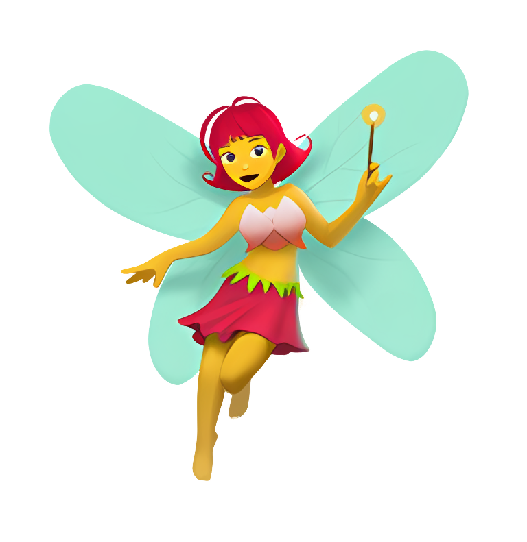

The woods are a lonely place. Saliadorus prayed that her work would be relocated soon—within the next century at least—but for now, she made do.
She treasured her short chats with the hikers, hobos, and occasional outlaw that she encountered, but these interactions happened less and less, so she expanded her search area for new… c̵͔̎u̵̡̎ś̶̘ṭ̸̓ò̸͕m̸̮͘e̸̦͗r̵̘͘ŝ̵̘.
Her most recent target was a tough one. Saliadorus had been working on them for months now. Since expanding operations onto the college campus, she'd been able to dupe some freshmen to fill in the gaps in the meantime, but this one student—a senior or grad student maybe—felt different. Never before had Saliadorus looked forward to a difficult one, but she certainly felt excited now as she zipped through the forest toward campus.
Lottie was already at the meeting point when Saliadorus emerged from the forest. Saliadorus treaded carefully during the day. She could not attract too much attention to herself, otherwise there would be c̶̟̬̈́͊o̶̘͂ń̴͍̬̊s̶̗̩̔̃e̷̳̒q̸̜̄ǘ̴͈e̴̡͑͗n̶̲͋c̵̼̲͠ĕ̴͎̍s̶̹̝͛́, but the meeting point was in this hidden alcove behind a building where they kept the garbage, nice and out of view of the rest of campus, but she could hear the buzz of students and cars nearby.
Saliadorus flew up to Lottie, who kicked back on a lone, ragged folding chair next to a white and red cooler. She knocked off the ashes from her cigarette as Saliadorus approached and retrieved two cans from the cooler, placing one in the chair's cup holder and the other atop the cooler.
As always, Lottie popped open both tabs. Saliadorus grew brighter and more sparkly in anticipation of her new favorite drink. She landed on the cooler's top, scattering glitter all over it.
“Howdy-doo, Sally,” Lottie greeted and took another puff of her cigarette. She wore her typical long-sleeved blue jumpsuit. The students made strange fashion choices, but wear the same outfit every day? Saliadorus would never understand this generation.
“Haha! How-die-dee, Lottie,” Saliadorus giggled in response. Lottie was so fun, giving her nicknames and making up new words. Sally was such a cute name though, she might start using it. She turned her attention toward the can, which stood as tall as she was. “What do you call this beverage today?”
“This one is Pabst Blue Ribbon or PBR for short.”
Pabst Blue Ribbon or PBR for Short. Saliadorus was always flabbergasted by the diversity of beverages humans made these days; it only made sense that this drink needed such a long name. To take a sip, Sally lifted herself with her wings to hover over the cooler, picked up the can by the rim and tilted it toward her. The can was maybe five times her weight, so it was a good workout.
“Oooh, I quite like this one, too!”
“Thought you might. Another long day?”
Sally set the drink down and sat on the rim of it. “Oh, just the longest. The forest has just been empty today. So boring.”
“But that's good, right? Isn't that what you want?”
“Sure,” the self-ordained fairy agreed, “but if no one comes by, they might not need me anymore, and then what would I do for work?” Sally told Lottie the standard pitch when they first met: that she was the guardian of a great maze full of dangers. It was her job to warn people away from the wretched nightmares that protect a great and magical prize at the center, a wishing pearl that would make any wish the holder has come true. Instead of the typical reaction of “tell me where this entrance is”, Lottie simply replied “cool” and offered Sally a drink.
“Yeah, the job market is terrible right now for us humans. I can't imagine what it must be like for pixies.”
Aww, Lottie thinks I'm a pixie! How cute, Sally thought. Sure, she was a small human-shaped creature with dragonfly style wings, but Sally hadn't shown her rows of teeth or clawed feet yet. She made sure to keep her mouth closed when she smiled and kept little booties on her feet, adding to the cuteness factor. She wasn't a fairy in the traditional sense, but that was the closest creature she resembled. Like her siblings, each of them was crafted for their role. “My family's… essence is tied to the maze. I don't know what I'd do if they let me go. How would I feed myself or my family?”
“Yeah, it sucks having to keep up that grind to put food on the table. I hear ya.”
“As a vessel of knowledge, I'm sure you are never bored.”
“Well, uh, I told you that I'm not a student anymore, right? I just work on campus now.”
“Ah, you used the fruits of your education to give back and support your university.”
“In a way, I guess.”
“What a noble spirit of yours!” Like the heroic type that might be willing to face off monsters in a mystical and dangerous maze.
“Don't get ahead of yourself. I never actually got my degree. I'm just a janitor, Sally.”
“Was it the burdensome financial pressures?” Sally didn't understand the concept of finance and money, but boy did all those freshmen like to complain about it. “It's a shame that—”
“No, I didn't have any of that. I had my veteran benefits. They covered most everything.”
Sally, still agape with the rest of the sentence on her tongue: a shame that the magical wishing orb is hidden in a maze full of treacherous foes. Something like that could pay for a million angles or degrees or whatever. But if that didn't matter, what could be Sally's new approach? “What happened?”
“I flunked. Just couldn't connect. My head wasn't in it. I was too old to be a freshman. I didn't make any friends in my classes—just with other veteran students.”
If Lottie had the magical wishing orb, she wouldn't even need to take classes; she could simply wish to bestow the knowledge and education upon herself… Sally thought out but held her tongue. Instead of her usual tactics, Sally decided that she would try a different strategy: “But you got this nice job on campus. You can still be close to your friends!”
“Er, well, yeah, for a while that worked, but then they finished their programs and moved on. Now it's just me, stuck.”
“Oh.” Sally again felt a loss of words. Most of the time, they vented to each other about annoying freshmen or bosses or family. This was out of Sally's depth.
“I'm really glad to have met you, Sally. These chats have been really nice.”
Sally took a sip of her drink while she searched for the words. “This my favorite part of the day.”
“To hardworking ladies!” Lottie reached out and leaned her drink toward the fairy.
Sally lifted the can and tapped it against hers, confirming her decision. Sally wouldn't mention the maze anymore; she couldn't lose her new and only friend.